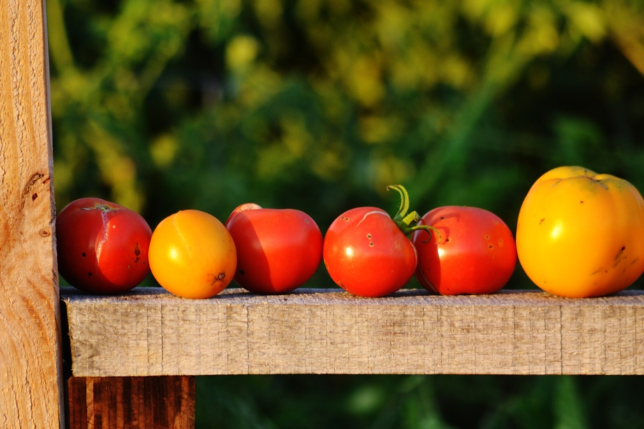

Operations
Stay updated with garden news, member info, and volunteer opportunities.
Log Volunteer Hours
Thank you for volunteering at MSCG. Please report your volunteer time in the Google Doc.
Log Hours HereFrequently Asked Questions
How do I get a plot at Merriam Station Community Garden?
Go to merriamstation.org and sign up for a plot! Applications are accepted beginning Jan. 1 of each growing season, and plots are awarded on a first-come, first-served basis. Existing gardeners are given priority. For questions, email mscg@unionparkdc.org.
If I can’t make it to a work day. Is there another way to fulfill the requirement for volunteer hours (two hours a month)?
Keep an eye out for tasks on our Facebook page (Merriam Station Community Garden) and notices posted at the Garden. But usually, you can weed common areas and the welcome garden, pick up trash, turn and chop compost, and mulch pathways.
Can my dog come to the garden?
Yes, but please be respectful of your neighbors. Tend to your dog’s waste, and keep them close.
How can I get involved with the Management Team, or with projects at the Garden?
It’s easy -- volunteer! Contact us at mscg@unionparkdc.org. There are a number of areas where we could use your help, including compost, communications, trash removal, vacation watering, tending to food shelf plots, and food-shelf delivery.
What kind of pesticides can I use?
We only use organic products.
What does the plot fee cover?
MSCG plots are $35 for a full plot and $20 for a half plot. The fees go into our general fund, which goes to paying the water bill, buying and maintaining equipment, sponsoring scholarships (discounted plots), and general garden operations.
What if I can’t afford to participate in a garden activity?
No one is turned away for lack of funding. If you can’t afford the regular plot fee, you can request a $5 plot. Occasionally, the garden will sponsor educational programs or activities that include a fee. We always have gardeners who are willing to cover the cost for cash-strapped members. Please do not be shy in asking for assistance when you need it.
Are there standards or guidelines for organic gardening? How do I know what I can and cannot use?
In general, refer to the University of Minnesota extension’s Garden page for detailed best practices and guidelines: http://www.extension.umn.edu/garden/. At MSCG we may not use any pesticides, herbicides, or chemical fertilizers per our lease agreement with the City of St. Paul.
What kinds of chemicals may be used and what kind may not?
Per our lease agreement with the City of St. Paul, no chemical applications are allowed at MSCG except with written permission from the city and application by the city. So, no chemicals. This includes miracle grow and other chemical fertilizers. Don’t worry, there are many organic fertilizers available and many expert gardeners to help you learn about organic gardening.
Are there any restrictions on materials I can bring to use in my plot?
Wood and most lumber is ok. Steel stakes and posts are also garden appropriate. Please do not bring green treated materials. Plastic and foam building materials should also be avoided. Plastic, non-breathable ground cover is not allowed.
What tools are available to use in the shed?
Wheel barrows, shovels, hoes, rakes, etc. are all available for use in our tool shed. Please remember to clean items before returning them to the shed and please leave the shed tidier than you found it. Always leave the shed locked.
What bee and butterfly-friendly kinds of activities does the garden promote?
Merriam Station Community Garden is a host to The Wildflower Project, an ambitious nonprofit effort by a local wildflower enthusiast. Their plot has a windy path up the hill toward the phase III plots. Another pollinator garden is in the works for Spring 2017, at the corner of Prior and Gilbert, with help from the City of St. Paul. We also have resident expert entomologists John and Allie. If you’ve got questions about bugs, reach out to mscg@unionparkdc.org and your question will be forwarded. In 2016, MSCG hosted a walk-through insect lesson by Allie.
What should I do if I suspect someone is stealing?
If you are comfortable, confront them and ask them not to steal. It is possible to peacefully and respectfully advise vegetable thieves to move on. Remind them that they did not grow those vegetables they are taking. Suggest that they join the garden if they would like to grow their own vegetables. Offer them some food from your plot if you have some available. Remind them that our garden donates lots of produce to the Keystone food shelf three times a week. Mention that they are taking food away from another family who is counting on the food they grow.
What should I do if I catch someone dumping at the garden?
Get their license plate number and report it to the management team and the police. The police non-emergency number is 651-291-1111. If you’re comfortable, confront them and ask them to stop.
I saw a tree service contractor dumping a load of mulch at the garden. I asked him what he was doing. He said he had standing permission to “donate” mulch. Does that sound right?
No! Tree companies do not have permission to dump mulch at our garden. The City of St. Paul forestry department is the only entity allowed to give us wood mulch. We do occasionally request and receive mulch from other sources, but those dump sites will always be clearly marked and a representative of the garden will be there to receive the load.
What should we do if the water is broken?
Contact the water coordinator. Call a section leader or a member of the management team if you can’t get in touch with a water coordinator. Water problems are extremely urgent, so please do not rely on email.
What do I do with trash?
Please pack your own trash out of the garden with you. We do not subscribe to a garbage service and we do not (for the moment) maintain a trash bin on site. If you find trash at the garden and you are able to clean it up and bring it home, please do so. If there is large trash dumped at the garden, please report it to the Grounds Manager. Report large dumped items to the St. Paul’s citizen services: 651-266-8989.
How can I make suggestions to the leadership team?
Kindly email mscg@unionparkdc.org. or find one of us in person at the garden!